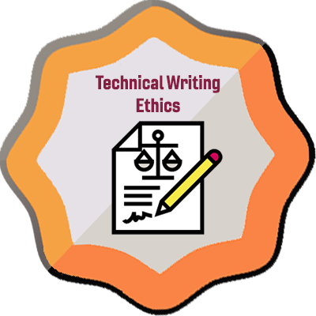

This term I am experimenting with Badgr, which is linked in Canvas. You can earn badges when you earn a Complete on various activities in the course. The badges do not carry any credit in relation to the course, but you can use them to be sure that you have completed all the work in a module or another category of work.
| Badge Image | Badge Name & Criteria |
|---|---|
 |
Technical Writing: Course Intro (Module 1)Earn a Complete on all Module 1 requirements, which focus on an introduction to the course. |
 |
Technical Writing: Rhetorical Awareness (Module 2)Earn a Complete on all Module 2 requirements, |
|  |
Technical Writing: Ethics (Module 3)Earn a Complete on all Module 3 requirements, |
 |
Technical Writing: Plain Language (Module 4)Earn a Complete on all Module 4 requirements, |
 |
Technical Writing: UX & Document Design (Module 5)Earn a Complete on all Module 5 requirements, |
Technical Writing: UX Document Revision (Module 6)Earn a Complete on all Module 6 requirements, |
|
 |
Technical Writing: Project Management (Module 7)Earn a Complete on all Module 7 requirements, |
Technical Writing: Proposals & Group Logistics (Module 8)Earn a Complete on all Module 8 requirements, |
|
 |
Technical Writing: Submitting Your Proposal (Module 9)Earn a Complete on all Module 9 requirements, |
Technical Writing: Conducting Research (Module 10)Earn a Complete on all Module 10 requirements, |
|
Technical Writing: Progress Reports (Module 11)Earn a Complete on all Module 11 requirements, |
|
Technical Writing: Report Body (Module 12)Earn a Complete on all Module 12 requirements, |
|
 |
Technical Writing: Front & Back Matter (Module 13)Earn a Complete on all Module 13 requirements, |
Technical Writing: Recommendation Report (Module 14)Earn a Complete on all Module 14 requirements, |
|
Technical Writing: All Major ProjectsEarn a Complete on all Major Projects in the course. |
|
Technical Writing: All Weekly Check-In SurveysEarn a Complete on all weekly Check-In Surveys in the course. |
|
Technical Writing: Sharp ReadersEarned rarely by those who xxx |
|
Technical Writing:Earn a Complete on all Module requirements, |
|
| extra4 | |
| extra5 | |
| extra6 |